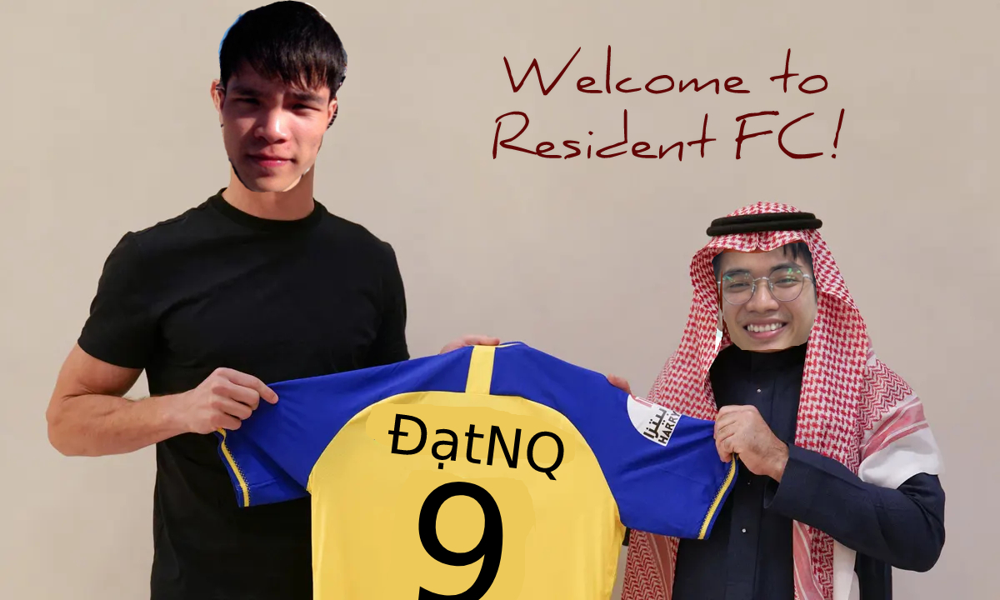
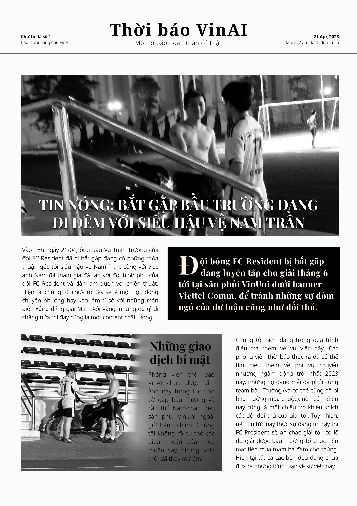
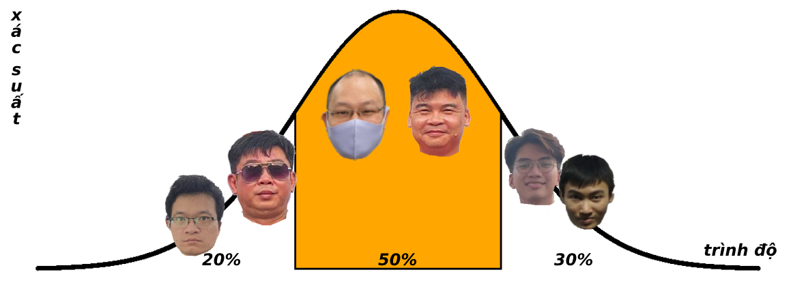

Khi content họp báo còn được làm bằng Canva
Khi Wednesday the King plays
Resident FC xin chào mừng anh Đạt đến với đội của những kẻ
chiến thắng! Đây chắc chắn là một hợp đồng bom tấn nóng nhất
mùa chuyển nhượng này trên thị trường cầu thủ VinAI. Với chế
độ đãi ngộ chưa được tiết lộ, anh Đạt sẽ là một đối thủ đáng
gờm của tất cả các cầu thủ đội bạn, hứa hẹn những bàn thắng
đẹp nhất highlight reels vào những giây phút chủ chốt của trấn
đấu, đem về những chiến thắng huy hoàng cho team underdog mới
lập của mùa giải này.
Khi được hỏi cho ý kiến về thông tin nóng hổi này, huấn loạn
viên Tran Luong Nguyen cho biết: "Tôi đã làm việc và thi đấu
cùng anh Đạt, và tôi có thể tự tin khẳng định rằng đây là một
nhân tố quan trọng trong con đường tới chiếc cúp vô địch quý
giá của đội chúng tôi. Anh Đạt thực sự là một ứng cử viên sáng
giá cho danh hiệu Quả Bóng Vàng của giải; thậm chí tôi còn không
thấy bất cứ một ai có thể cạnh tranh với anh về đề mục này."
Bầu Vũ Tuấn Trường ý kiến thêm, "Không chỉ đưa team Resident FC
đến tới chức vô địch, anh Đạt còn là một ứng cử số 1 cho danh
hiệu Chiếc Giày Vàng nữa. Thực sự tôi không thể tưởng tượng
được một ai có thể vượt được anh Đạt trong khả năng xử lý 1
chạm khiến thủng lưới team bạn. Anh Đạt sẽ là một nỗi sợ ám
ảnh trong lòng những thủ môn đội bạn; sự xuất hiện của anh Đạt
sẽ làm cho trận đấu trở thành một mưa bàn thắng và một màn
biểu diễn mãn nhãn cho những người xem."
Một lần nữa, chào mừng anh Dat đến với Resident FC!

Khi cập nhật thông tin về giải VinAI Championship 2023
Khi đi đêm với siêu sao đội bạn

Khi cổ động cho giải bóng đá mùa hè sắp tới của đội FC Resident
Khi đội anh Tùng mạnh quá

Khi quan ngại sâu sắc về cách tính xác suất vô địch của anh Thor

Khi tổng kết giải đấu VinAI Summer Cup 2023
[+] FC Resident trân trọng cảm ơn tất cả các nhà hảo tâm và quý khán giả đã đóng góp cho một mùa giải
thành công vang dội! Các đội bóng và cá nhân đoạt giải vui lòng nổ số tài khoản để gửi tiền thưởng ạ!
[+] Đội bóng xin được trích 100% tiền giải ba cho quỹ của liên đoàn, nhờ liên đoàn ntt và nổ số tài
khoản để ting ting trong không khí hân hoan này.
[+] Thông tin về bữa ăn tri ân sẽ được đăng tải trong thời gian sớm nhất ;)
╭――――――――――――――――――――――――――――――――――╮
│ https://ngoc.io/football/summer/ │
╰――――――――――――――――――――――――――――――――――╯